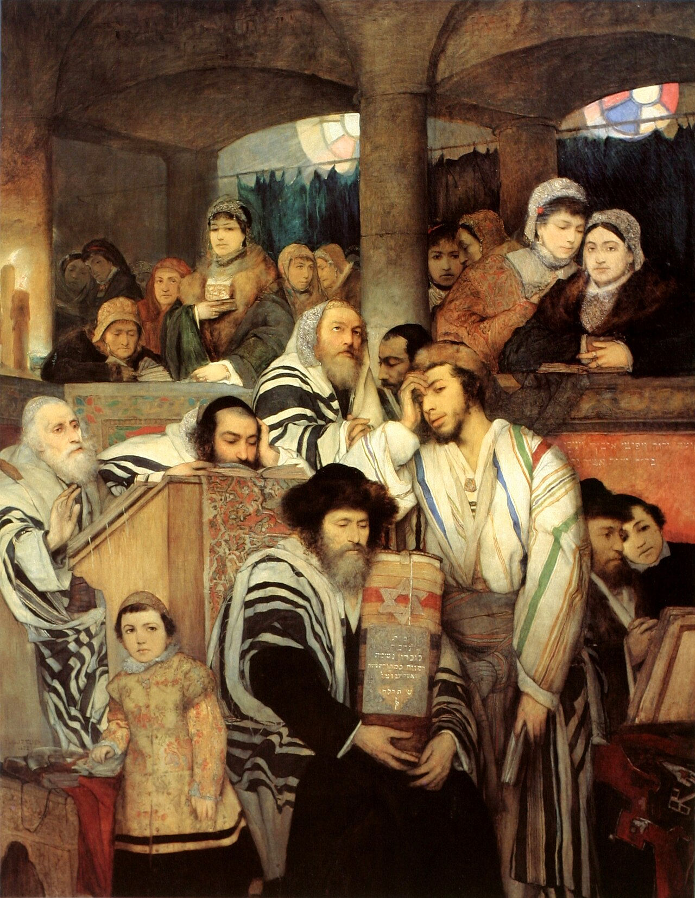
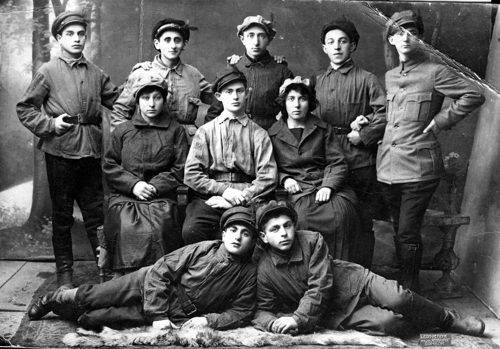

Galicia and Bukovina on the map
Archive, geography, memory
Jewish Galicia and Bukovina Atlas
Stories of cities, communities, and people - from flourishing life to catastrophe and the return of memory.


Archive, geography, memory
Stories of cities, communities, and people - from flourishing life to catastrophe and the return of memory.

